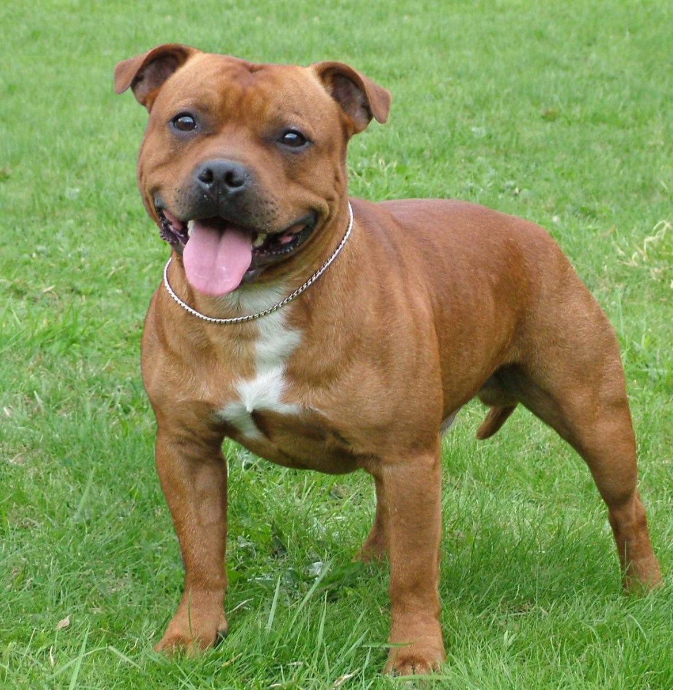

Стаффордширский бультерьер

Происхождение: Англия
Размер: Средние (рост: 35–40 см, вес: 11–17 кг)
Характер: Добродушные, смелые, любят детей
Особенности: Компактные, но мускулистые. Хорошо ладят с людьми, но могут конфликтовать с собаками. Подходят для квартиры
Здоровье: Катаракта, кожные проблемы